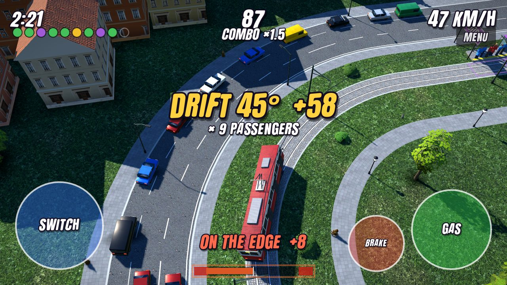
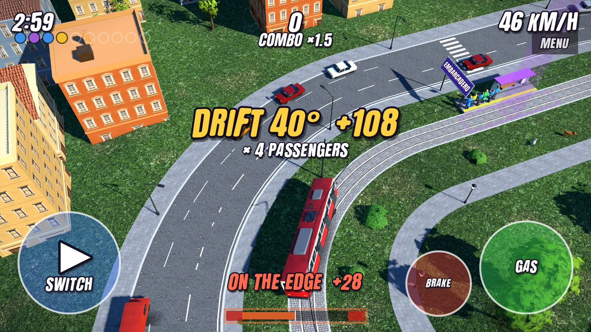
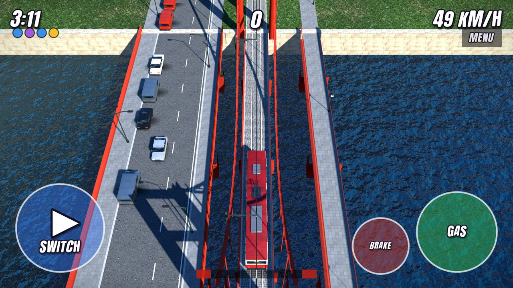
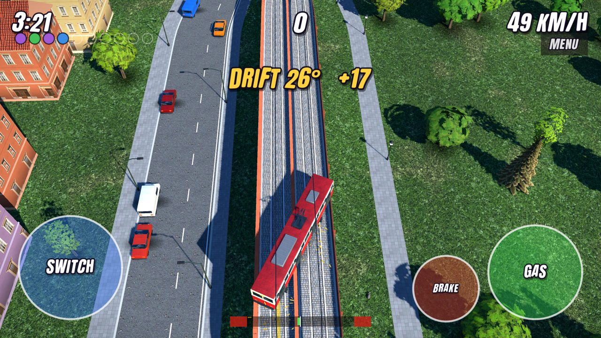
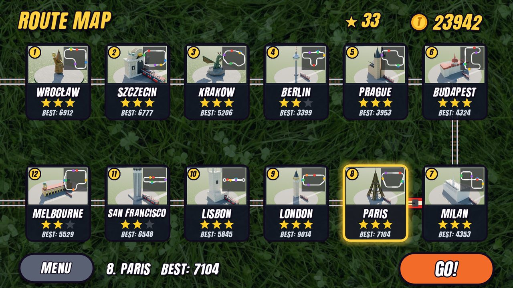
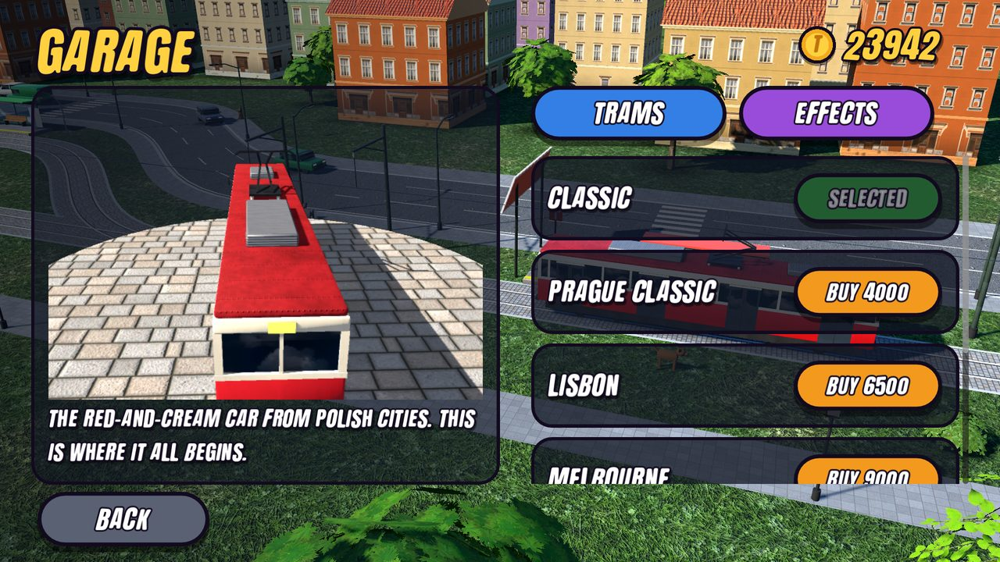

Tram Drift
Drift a tram through 12 cities
Flip the switch at just the right moment — after the front bogie, before the rear one — and your tram slides sideways across two tracks. That's a tram drift, and every passenger on board pays for it.
Get it on Google PlayFree · Android

Screenshots






What is inside
- Drift on the switches Flip the switch between the bogies and slide across two tracks. Chain drifts for a combo up to ×3.
- Pick up, drift, deliver Stop at tram stops, park in the zone and take passengers on board — the fuller the tram, the bigger the payout.
- 12 cities, 12 different routes Wrocław, Szczecin, Kraków, Berlin, Prague, Budapest, Milan, Paris, London, Lisbon, San Francisco and Melbourne — each with its own landmark.
- City traffic Level crossings with stuck trucks, scooter riders cutting across, traffic lights at the figure-eight, steep hills.
- Garage Six trams and four effects: pantograph sparks, underglow neon, fire trails and a ghost trail.
- No account needed Your progress is saved on your phone. English and Polish.
Free, with ads
The game is free and shows ads: banners on the map and the ride summary, an occasional full-screen ad after a ride and optional rewarded videos you choose to watch. A one-time Full Version removes all ads and unlocks every tram and effect.